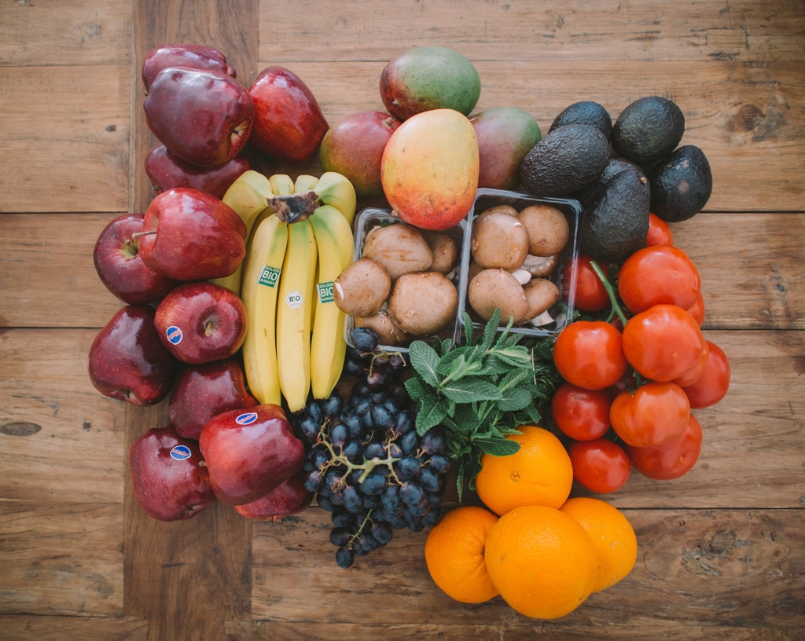
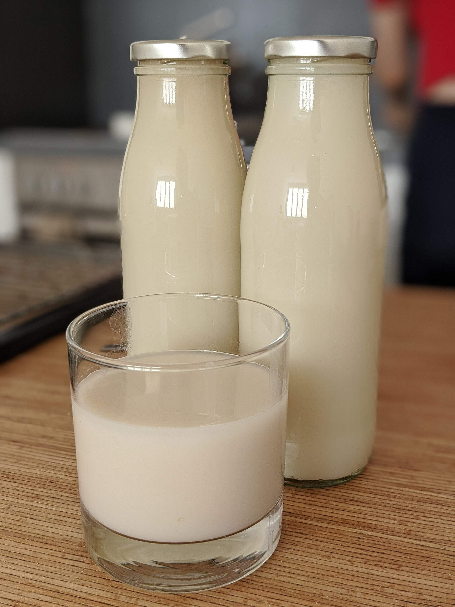
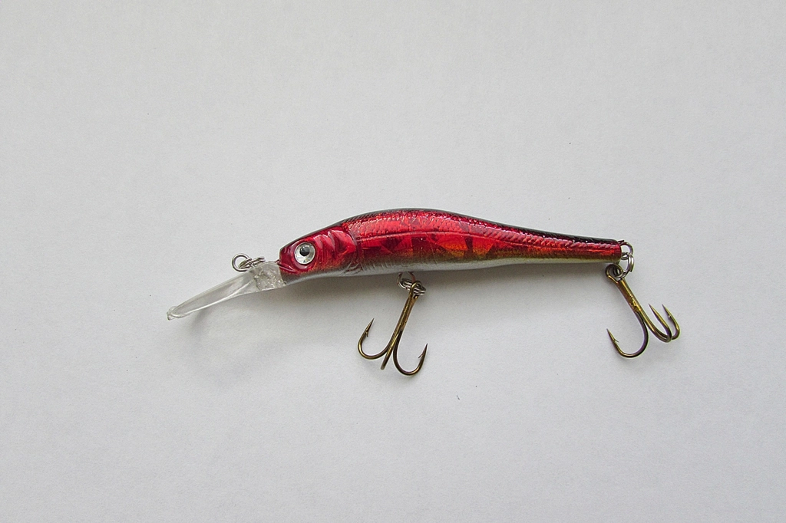
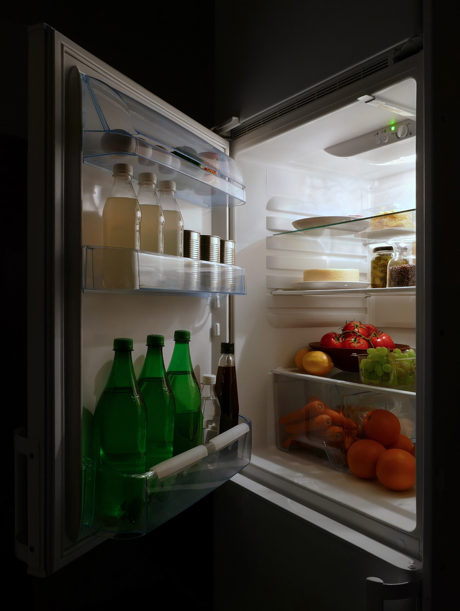
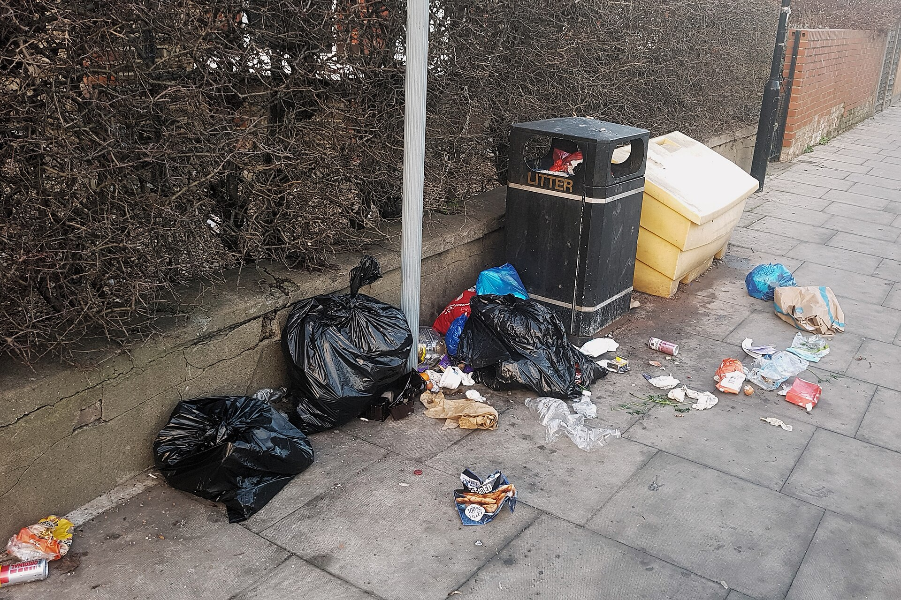

okay, fair is fair…
store's profit+$2
…sometimes−$1
they lose too - good.

milk
+1¢
bread
+2¢
eggs
+1¢
give one away → store LOSES money

BAIT
a "loss leader"
snacks
+$7
wine
+$12
the rest of your cart →+$52
spoiler: you will

2-for-1 you
can't finish…
can't finish…
USE BY
3 days
SCIENCE EXPERIMENT
EXPIRED
a "free" yogurt…
you forgot you owned
you forgot you owned
FREE
BINNED.